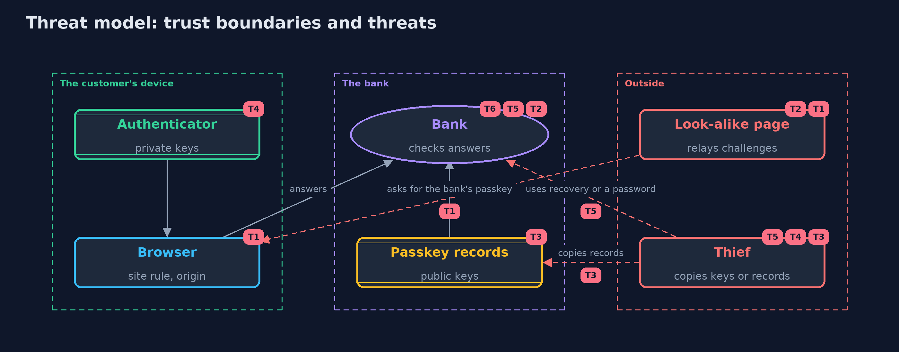

Threat Model — Passkeys and WebAuthn
A threat model answers four questions: what are we protecting, who or what could harm it, how, and what do we do about it. This one covers this project's own demo system, not a production deployment. Domain: an online bank.
Scope
Passwordless sign-in at an online bank with passkeys: registration, sign-in, payments with user verification, copied keys, recovery and the remaining password. It covers a look-alike site, a replayed answer, a copied database or key, and the fallback paths. It does not cover malware in control of the customer's device or browser, attestation, or the platform that syncs passkeys.
What we protect (assets)
- Customers' accounts and money.
- The private keys inside customers' authenticators.
- The bank's passkey records: public keys and counters.
- Recovery codes and any remaining passwords.
Who and what acts on the system
- Customers and their devices.
- A look-alike site that relays the bank's challenges.
- A thief who copies the bank's records, a device's key, or a recovery code.
Trust boundaries
A trust boundary is a line that data or a request crosses between parts that trust each other differently. Threats cluster where those lines are.
- Customer's device to the bank: every answer crosses it and is checked.
- Web page to the browser: the page cannot choose the origin or another site's relying party id.
- Authenticator to everything else: the private key never leaves it.

Each dashed box is a trust boundary. A rose tag such as T1 shows where the threat of that number, in the table below, applies.
Threats, using STRIDE
STRIDE is a checklist of six kinds of threat: Spoofing (S), Tampering (T), Repudiation (R), Information disclosure (I), Denial of service (D), Elevation of privilege (E).
| Id | Kind | Threat | Where it shows up | Control in this project | What is left |
|---|---|---|---|---|---|
| T1 | Spoofing | A look-alike site captures the customer's sign-in | the browser, Browser.rpIdAllowedFor, RelyingParty origin check |
The authenticator signs only for its relying party id, the browser allows only the page's own site, and the bank checks the origin in the signed client data | A password or recovery path that is still enabled can be phished instead |
| T2 | Spoofing | An earlier answer is replayed | RelyingParty challenge store |
Challenges are random, single-use and expire after five minutes | The bank must keep the challenge store on the server, not in a cookie the client can resend |
| T3 | Information disclosure | The bank's passkey records are copied | the passkey records | Only public keys, credential ids and counters are stored; none can sign | Records still reveal which customers use which devices; protect them as personal data |
| T4 | Spoofing | A device-bound key is copied and used | RelyingParty counter check |
A counter that does not rise is refused and the passkey suspended | Synced passkeys report zero, so their copies cannot be detected this way |
| T5 | Elevation of privilege | The attacker uses the weakest remaining way in: a password or the recovery path | RelyingParty.passwordSignIn, RelyingParty.recover |
One-time recovery codes stored as hashes, two passkeys per customer, passwords switched off | Recovery by a person (a call centre) remains open to persuasion and needs its own checks |
| T6 | Elevation of privilege | An unattended, unlocked device approves a payment with only a touch | RelyingParty.startSignIn(user, forPayment) |
User verification is required for payments | Malware on an unlocked device is out of scope |
Assumptions
- The customer's browser enforces the WebAuthn rules.
- The bank's clock is correct to within the challenge lifetime.
- In the demo, keys and challenges are random and never printed, and the password and recovery code are demo values.
Out of scope
- Malware that controls the customer's device or browser.
- Attestation of authenticator models.
- The security of the account a synced passkey syncs through.
How the tests check this
EncodingTestchecks base64url against RFC 4648, SHA-256 against the abc vector, and the byte layouts of client data and authenticator data.RelyingPartyTestchecks every refusal with its exact reason: used and expired challenges, another customer, type, origin, relying party id, flags, unknown credential, a stranger's key, a copied key, synced passkeys, the browser's site rule, passwords and recovery codes.DemoRunsTestcompares the whole demo with the golden output.
Where this model goes next
The next project, saml-basics, looks at the older single sign-on standard that many banks still run beside OpenID Connect.